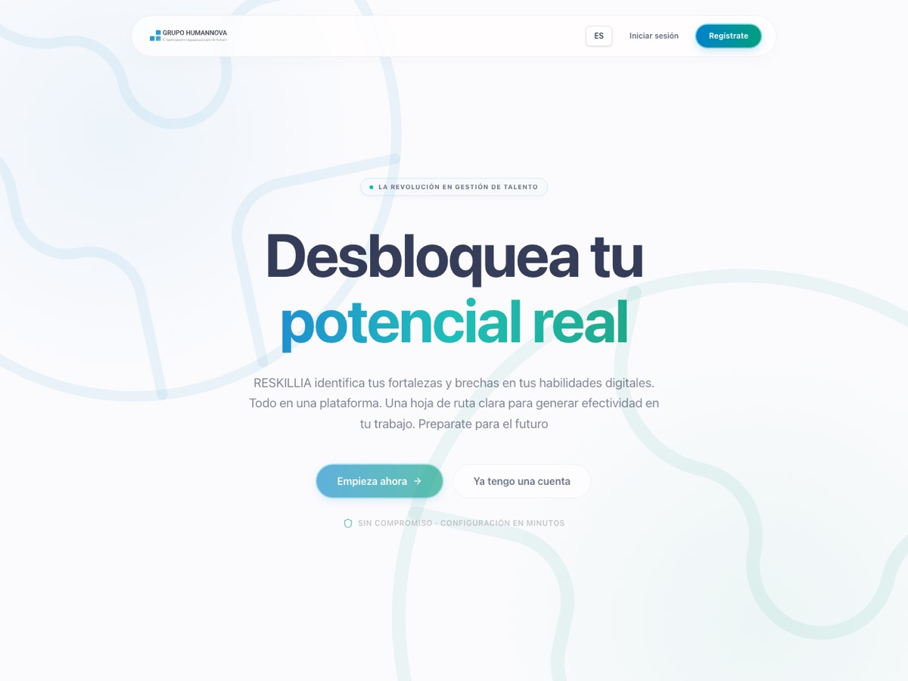
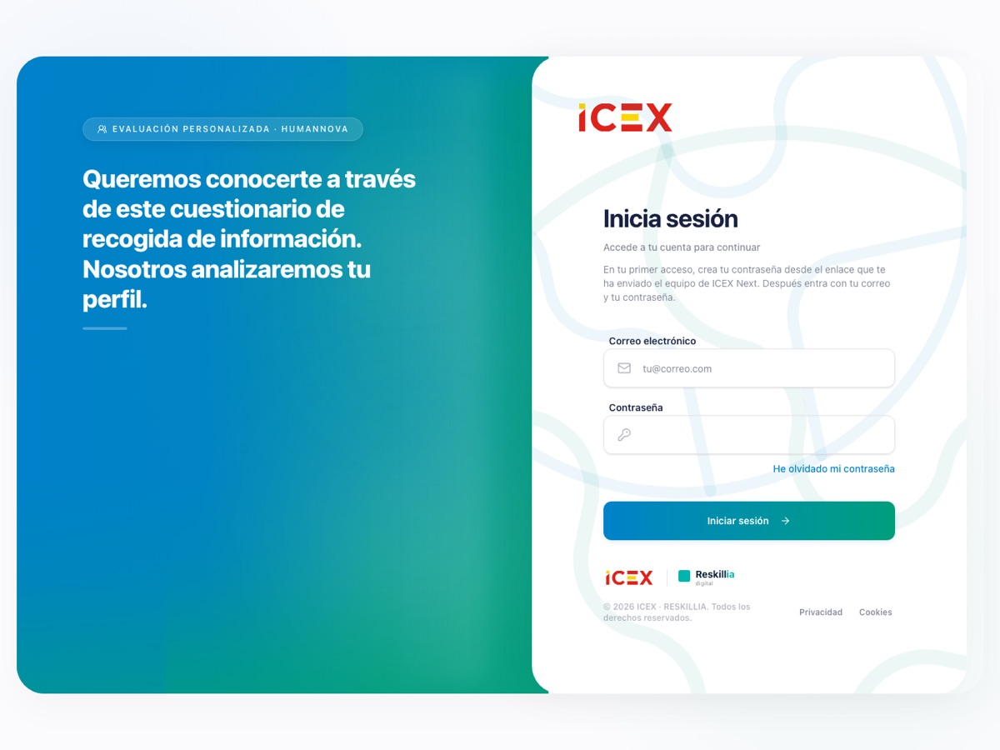
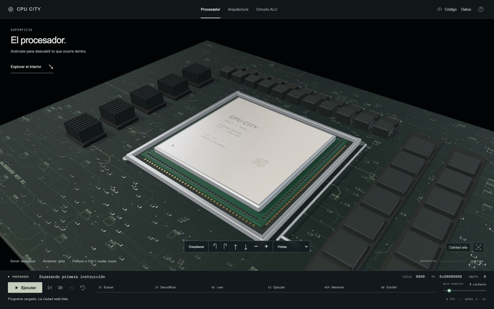

Leandro
Canela.
I enjoy the part of the work that is almost invisible: the data model, the permissions, and what happens when something fails.
- Currently
- Developer at Humannova
- Studying
- Computer science
- Based in
- Barcelona
01 / schema
The data model
Versioned questionnaires, drafts that survive a migration, every consent stored with its version and date.
02 / access
The permissions
Row-level security in PostgreSQL, encrypted personal data, invite-only access where privacy comes first.
03 / failure
When it breaks
Scanned CVs that need OCR, a Mac that goes to sleep mid-session, a query that quietly turns into N+1.
Selected work · 2025–2026
Things I've built,
newest first.
Open any row for my role, what's underneath and how it turned out.
-

Reskillia and ICEX Next One codebase, two products for Humannova One codebase, two products for Humannova Full-stack · Humannova 2026- Role
- Full-stack developer at Humannova
- When
- Mar 2026 – now
- Stack
- Next.js 16 · React 19 · Tailwind 4 · Supabase · Gemini · Docker
- Outcome
- Both live. Reskillia for companies, ICEX Next for the ICEX programme
Reskillia assesses a team's digital skills against DigComp 2.2, the European framework. Each person uploads a CV; Gemini picks seven competences with a target level, writes the questions and scores the answers. The result is a radar of expected against achieved, as a PDF.
ICEX Next is the same codebase cut down for a client who needed privacy first: no AI and no public sign-up. The team invites each person, who sets a password, accepts the policy and submits a CV and a questionnaire.
- Kept
- Supabase Auth, personal data encrypted with AES-256-GCM, RLS policies in PostgreSQL, Docker
- Added for ICEX
- Local OCR for scanned CVs; questionnaires versioned per profile, with drafts migrated between versions; every privacy acceptance stored with its version and date; Excel export
- Removed for ICEX
- Gemini, public sign-up

-

CPU City A processor you can explore, down to the ALU A processor you can explore, down to the ALU Solo project 2026- Role
- Design and code, solo
- When
- Oct 2026
- Stack
- TypeScript · Vite · WebGL
- Outcome
- Live: runs real RISC-V programs in the browser
A 3D processor you can explore. As the camera gets closer, it reveals a city.
RISC-V assembly runs in a Web Worker, and every instruction can be followed down to the ALU circuit that executes it.
-
 Tomate
A macOS timer for 25 to 90 minute sessions
A macOS timer for 25 to 90 minute sessions
Solo project
2026
Tomate
A macOS timer for 25 to 90 minute sessions
A macOS timer for 25 to 90 minute sessions
Solo project
2026
- Role
- App and download site, solo
- When
- Oct 2026
- Stack
- SwiftUI · macOS 14+ · Astro
- Outcome
- Released at usetomate.com; fully local, no accounts or server
A Pomodoro timer for long study sessions, from 25 to 90 minutes. Anything over an hour can be split into two blocks with a break in between. It lives in the menu bar.
- Scheduling
- Sessions never overlap; notifications to start or decline
- Focus
- Turns on macOS Focus while studying, through Shortcuts
- Timekeeping
- Stored as dates, not a countdown, so it stays exact when the Mac sleeps
-
db-doctor A Claude skill that audits database layers A Claude skill that audits database layers Solo project 2026
- Role
- Solo
- When
- Oct 2026
- Stack
- Python, standard library only
- Outcome
- In-depth coverage of PostgreSQL, MySQL, Eloquent, JPA/Hibernate, Prisma, TypeORM, Sequelize and Supabase
An audit of an app's database layer. It finds the loop that silently fires 500 queries, SQL no index can serve, and indexes every write pays for and no read uses, and it proves each finding with evidence.
- Reads
- SQL, ORM code, the schema and its indexes
- Returns
- Findings ranked by impact, and a phased plan with SQL, risks, validation and rollback
-
 Club Stas Tarat
Website for a 40-year-old board game club
Website for a 40-year-old board game club
Team of three
2025
Club Stas Tarat
Website for a 40-year-old board game club
Website for a 40-year-old board game club
Team of three
2025
- Role
- One of three developers, with Manuel Ordoñez and Nicolau Miguel
- When
- Mar 2025 – Jul 2026
- Stack
- Laravel 12 · Tailwind 4 · Vite · Google APIs
- Outcome
- Live at stastarat.com for a club of about a hundred members
Website for a board game and role-playing club in Terrassa that has run for almost forty years: six sections, a weekly schedule, an event calendar, the game library and a members' area.
- Built
- Google APIs for the calendar; PDF and QR generation for members
Smaller tools
Outside work I build tools I use myself. Some of them stay small.
- Cinnamon Key Local-first desktop password manager. Electron · Vue · SQLite
- vault Password manager for the command line. Go CLI
- ascii-conversor Turns images into ASCII. Image → text
About
I'm a full-stack developer in Barcelona with the weight on the backend, and a computer science student. I work at Humannova. Before that, Laravel was my main tool.
The screens are what people see, but what I enjoy is underneath them: deciding how the data is shaped, who is allowed to touch it, and making sure that when something fails, it fails in a way someone can understand and recover from.
Backend
- Laravel
- PHP
- Go
- Node.js
Frontend
- Next.js
- React
- Astro
- Tailwind
- TypeScript
Data
- PostgreSQL
- Supabase
- MySQL
Tools
- Docker
- Git
- SwiftUI